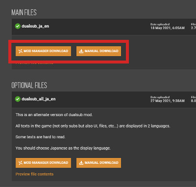
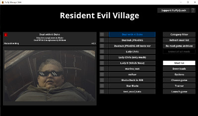

トップ>MOD工房>バイオ8 2言語字幕 MOD
英語の勉強に使えます。
字幕以外のテキスト(UI,ファイル等)を２言語表示するバージョンも用意しています。
(dualsub_ja_enは字幕のみを２言語表示、dualsub_all_ja_enは字幕以外のテキストも２言語表示するMODです。ただし、後者は一部のテキストが読みづらくなるので注意。)
音声言語は日本語、英語のどちらでも構いません。
これで２言語字幕が適用されているはずです。
質問・要望があればtwitterまで。
バイオ8 2言語字幕MOD ver1.0
Downloadはこちら
概要
英語字幕と日本語字幕を同時に表示するMODです。英語の勉強に使えます。
字幕以外のテキスト(UI,ファイル等)を２言語表示するバージョンも用意しています。
動画
インストール手順
STEP1:ファイルのダウンロード

こちらからdualsub_ja_enまたはdualsub_all_ja_enをダウンロードします。(dualsub_ja_enは字幕のみを２言語表示、dualsub_all_ja_enは字幕以外のテキストも２言語表示するMODです。ただし、後者は一部のテキストが読みづらくなるので注意。)
STEP2:FllufyManagerでMODを適用

Fllufy ManagerでMODをインストールします。STEP3:表示言語で日本語を選択！
ゲームを起動し、OPTIONS内の「LANGUAGE」で表示言語を日本語に設定します。音声言語は日本語、英語のどちらでも構いません。
これで２言語字幕が適用されているはずです。
質問・要望があればtwitterまで。